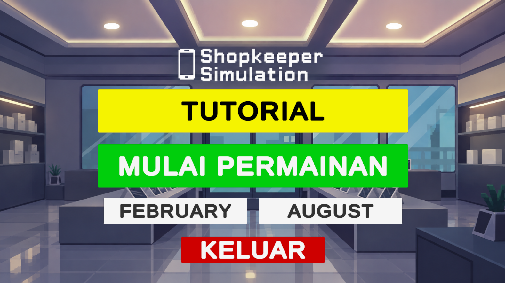
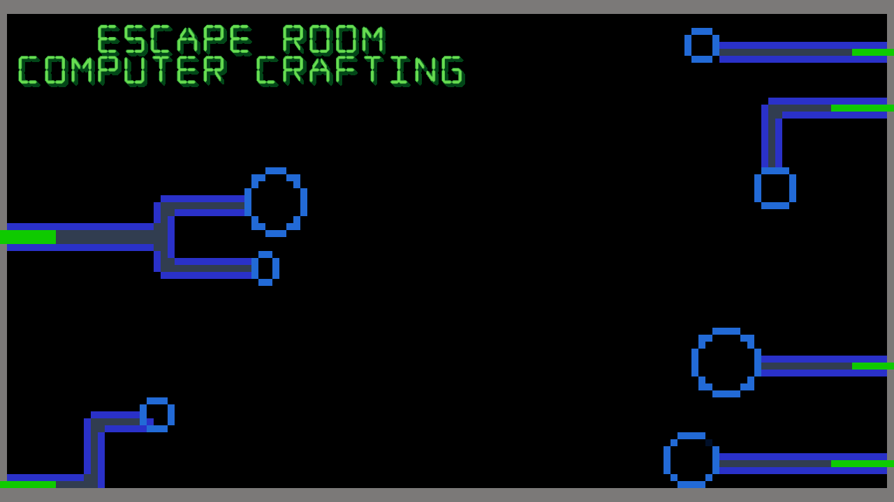
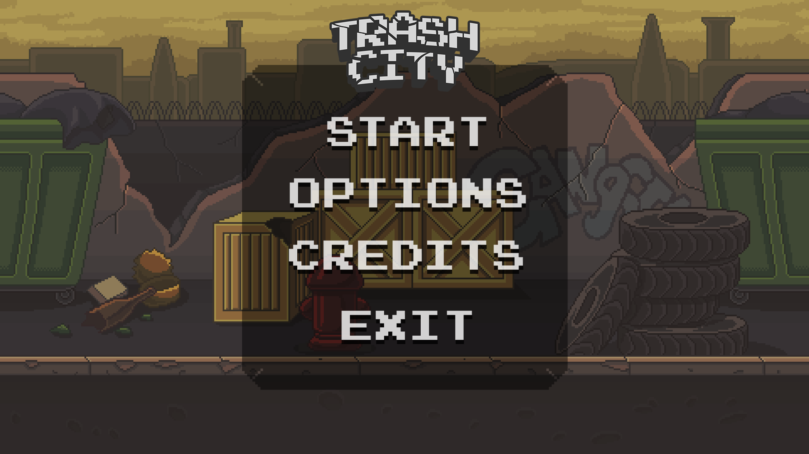

2025–2026 · Simulation
Shopkeeper Simulation
A PC vertical-slice simulation about managing a second-hand phone shop. Inspect device condition, evaluate prices, negotiate with customers, and manage money, storage, and time.
I’m a game designer developing my skills as a game programmer. I enjoy shaping game mechanics, designing player experiences, and bringing ideas to life through playable projects.
Explore projects ↓Get in touch ↗Select a project to explore its overview, contributions, gameplay highlights, and available media.

A PC vertical-slice simulation about managing a second-hand phone shop. Inspect device condition, evaluate prices, negotiate with customers, and manage money, storage, and time.

A room-escape game about AL, a teenager imprisoned after exploring the deep web. Players explore rooms, collect clues, and solve puzzles to progress.

A game about a waste collector working in a densely populated city. Players collect and sort rubbish while learning about different waste types through in-game information.
I’m interested in how mechanics, systems, and level design work together to create engaging player experiences. I’m growing my programming skills in Unity while building on my game design background.
Game Technology
Game Design & Game Programming · Final Project
Game Design Intern — analyzed similar games, designed 3D levels, and discussed level designs with the team.
Game Design Intern — designed 2D maps and researched and balanced in-game item prices.
Active member contributing across changing team needs and activities.
Grouped by discipline, with examples of where these skills were applied in my projects.
Game mechanics, level design, balancing, and player experience.
Unity and C# development, with a focus on expanding programming skills.
Playable-area layouts, environment placement, and map design.
Design communication, planning, and working with changing team needs.
Software and tools used across design, development, and collaboration.
I’m open to opportunities, collaboration, and conversations about game design and development.
0cungamer@gmail.com ↗